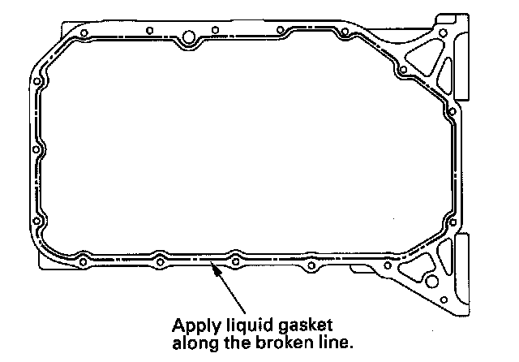
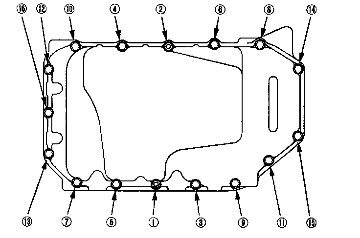
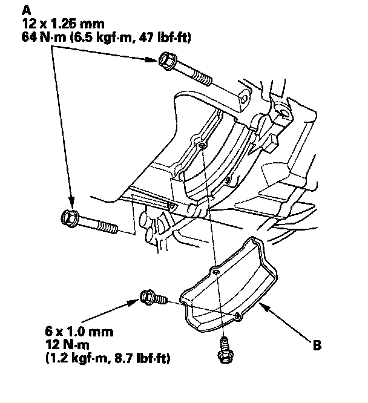
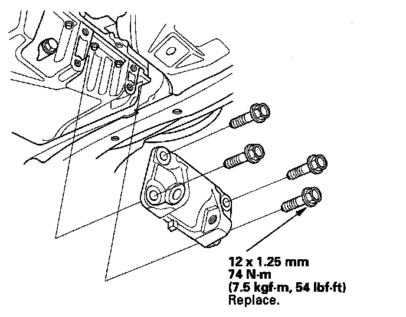

Oil Pan Installation
Oil Pan Installation1. Remove all of the old liquid gasket from the oil pan mating surfaces, bolts, and bolt holes.
2. Clean, and dry the oil pan mating surfaces.
3. Apply liquid gasket, P/N 08717-0004, 08718-0001, 08718-0002, 08718-0003, or 08718-0009, evenly to the lower engine block mating surface and to the inside edge of the bolt holes.
NOTE: Do not install components if too much time has passed after applying the liquid gasket (for P/N 08718-0002, no more than 4 minutes, for all others, no more than 5 minutes). Instead, remove the old residue and reapply the liquid gasket.

4. Install the oil pan.
5. Tighten the bolts in two or three steps. In the final step, tighten all bolts, in sequence, to 12 N-m (1.2 kgf-m, 8.7 lbf-ft). Wipe off the excess liquid gasket on the each side of crankshaft pulley and flywheel.
NOTE:
^ Wait at least 30 minutes to allow liquid gasket to cure before filling the engine with oil.
^ Do not run the engine for at least 3 hours to allow liquid gasket to cure after installing the oil pan.

6. Install the transmission mounting bolts (A) and clutch cover (B).

7. Install the lower torque rod bracket.

8. If the engine still in the vehicle, do the following steps.
9. Support the front subframe with the front subframe adapter and a jack, and lift it up to the body.
10. Loosely install the new front subframe mounting bolts.
11. Align all reference marks on the front subframe with the body, then tighten the bolts on the front subframe to the specified torque.
12. Remove the jack and front subframe adapter.
13. Tighten the new front subframe mid-stiffener mounting bolts on both side.
14. Lower the vehicle on the lift.
15. Loosen the upper torque rod mounting bolt.
16. Raise the vehicle on the lift.
17. Install the lower torque rod, then tighten the new lower torque rod mounting bolts in the numbered sequence shown.
18. Loosely tighten the new front mount mounting bolt.
19. Lower the vehicle on the lift.
20. Tighten the upper torque rod mounting bolt.
21. Raise the vehicle on the lift to full height.
22. Tighten the front mount mounting bolt.
23. Install the stiffener, then tighten the steering gearbox mounting bolt and stiffener mounting bolt. Install the harness clamp from the front subframe.
24. Install the steering gearbox bracket. Install the stiffener, then tighten the steering gearbox mounting bolt and stiffener mounting bolt.
25. Connect the lower arms to the knuckles.
26. Connect the stabilizer links.
27. Install the splash shield.